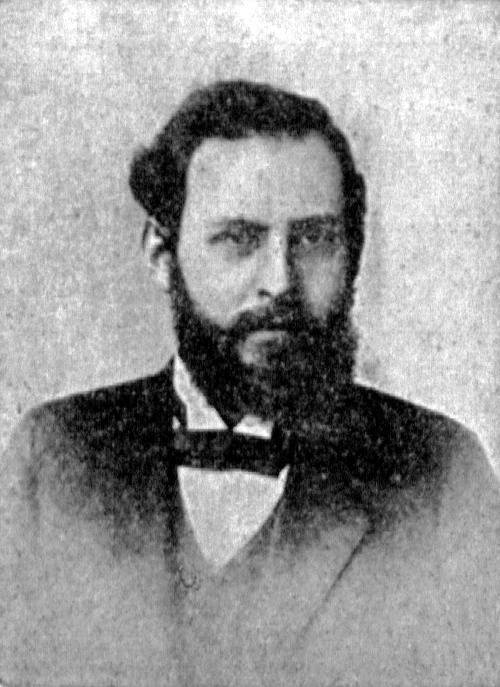

Базаров В.А.
Базаров Владимир Александрович (настоящая фамилия — Руднев)
Русский философ и экономист, публицист; социал-демократ.
27.07.1874 – 16.09.1939
Родился в Туле в семье врача. Из дворян. Учился в Тульской классической гимназии, где познакомился с Александром Александровичем Малиновским (Богдановым) — русским врачом, экономистом, философом, политическим деятелем, учёным-естествоиспытателем. После гимназии Базаров поступил на физико-математический факультет Московского университета, но, отучившись полный курс, диплом не получил в связи с арестом и высылкой. В 1900 — 1901 гг. — за границей, завершил свое университетское образование, окончив философский факультет Берлинского университета. В 1904 г. под влиянием А.А. Богданова примкнул к фракции большевиков, однако вскоре отошел от большевизма, оставаясь по своим политическим взглядам убежденным социал-демократом до конца жизни.
Первая важная философская работа Базарова — статья «Авторитарная метафизика и автономная личность» в сборнике «Очерки реалистического мировоззрения (1904), который был полемическим ответом на сборник «Проблемы идеализма» (1903) с участием П.Б. Струве, Н.А. Бердяева, С.Н. Булгакова и др. Соединяя теорию познания Э. Маха и Р. Авенариуса с социальной философией марксизма, Базаров критиковал «абсолюты», отстаиваемые «идеалистами» в области гносеологии и морали. Базаров был активным участником философских споров, которые вели в начале ХХ в. «ортодоксы» русской социал-демократии. В статье «Мистицизм и реализм нашего времени» (сб. «Очерки по философии марксизма», 1908) выявил различия между материализмом Маркса и материализмом школы Г.В. Плеханова. В дальнейшем он критикует «догматический материализм»: полемизирует с «иероглифической» концепцией Плеханова, с теорией отражения В.И. Ленина. Философские статьи, направленные против метафизики как «идеализма», так и «материализма», собраны в сборнике Базарова с характерным названием «На два фронта» (1910). В качестве убежденного («духовного») марксиста Базаров полемизировал с Д. С. Мережковским, А. А. Блоком, Вяч. И. Ивановым и др. русскими «религиозными интеллигентами». В 1900-х гг. Базаров переводил философскую и экономическую литературу (вместе с И.И. Скворцовым-Степановым перевел на русский язык «Капитал» К. Маркса); вновь занялся переводческой деятельностью в 1930-х гг. (переводил художественную литературу вместе с женой, репрессированной вскоре после его смерти).
30 декабря 1905 г. на I конференции РСДРП избран в редакцию центрального органа — «Партийные известия», кроме него в состав вошли В.И. Ленин, А.В. Луначарский, Ф.И. Дан, Ю.О. Мартов, А.С. Мартынов. После революции 1905—1907 гг. сблизился с меньшевиками. Вместе с Богдановым и П.С. Юшкевичем в конце 1915 г. Базаров возглавил отдел философии в редакции организованного М. Горьким журнала «Летопись». Отрицательно воспринял Октябрьскую революцию 1917 г. В годы Гражданской войны жил в Харькове (1919–1921), где при его участии издавался журнал «Мысль». В 1917–1919 гг.— меньшевик. C 1921 г. Базаров работал в государственных плановых органах, разрабатывал методологию анализа денежной эмиссии и хозяйственного баланса страны. С 1921 г. Базаров — член Президиума Госплана СССР. В 1926 году вместе с В.Г. Громаном предложил метод планирования и оценки государственной экономики, основанный на «тектологических» принципах, которые были признаны «антимарксистскими». Автором и разработчиком науки «тектология» был А.А. Богданов.
В 1928 г. в отношении Базарова была развернута травля. 1928 г. стал последним, когда его еще публиковали в периодической печати. Страшным ударом явилась для него смерть Богданова, за которой последовала кампания по разоблачению «богдановщины», в том числе и принципов тектологии. Сталин 27 декабря 1929 г. на Всесоюзной конференции аграрников-марксистов в докладе «К вопросам аграрной политики в СССР» указывал: «Не подходит также к делу трактовка Базарова и Громана баланса народного хозяйства. Схему баланса народного хозяйства СССР должны выработать революционные марксисты, если они вообще хотят заниматься разработкой вопросов экономики переходного периода». В 1930 г. уволен из Госплана и исключен из Коммунистической академии общественных наук (членом которой был с 1918 г.) как участник организации «экономистов-вредителей». А летом 1930 г. ОГПУ провело аресты крупных специалистов центральных хозяйственных ведомств. В основном это были широко известные учёные и эксперты, игравшие заметную роль в годы НЭПа. Был среди них и В.А. Базаров. Одним из главных обвинений в его адрес оказалось следующее: «Базаров является неприкрытым «богдановцем»; в отличие от других он этого не отрицает». После ареста Базаров вел себя достойно. Он (один из немногих) не признал себя виновным. Далее последовало осуждение на пять лет, тюремное заключение, ссылка. Вскоре после освобождения Базаров умер в Москве от астмы 16 сентября 1939 г.
| Бадаев А.Е.< Предыдущая | Следующая >Балабанова А.И. |
|---|